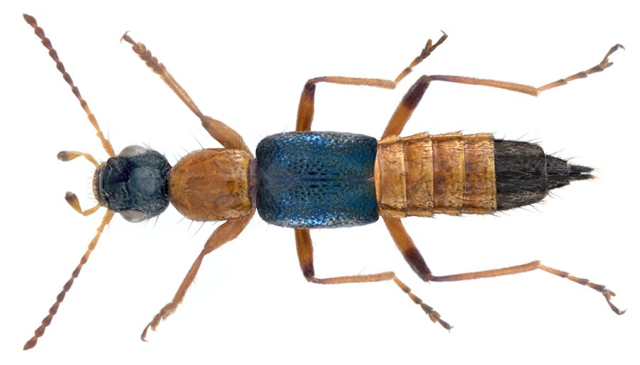

पेडेरस भृंगRove Beetle
Paederus fuscipes · Staphylinidae · INS-0095

- Scientific name
- Paederus fuscipes Curtis, 1826
- Family
- Staphylinidae
- Hindi
- पेडेरस भृंग
- Local names
- paederus, nairobi fly, lal kala kida, rove beetle
- Status here
- native
- Movement
- Resident, here all year
- IUCN
- not evaluated
- Review
- audited and independently read
When to look कब देखें
Expected mainly in April, May, June, July, August, September, October, November.
पेडेरस भृंग / Rove Beetle
Paederus fuscipes Curtis, 1826 — Staphylinidae
पेडेरस भृंग (नैरोबी फ्लाई) — यह बीटल खतरनाक है। यह एक छोटी, काली बीटल है जो धान के खेतों और नम जगहों पर रहती है। इसमें एक जहरीला रसायन, पेडरिन होता है, जो इसके शरीर के अंदर है। अगर आप इसे कुचल दें, तो यह रसायन निकल कर आपकी त्वचा पर बहुत गंभीर, दर्दनाक दाने (जलन वाली सूजन) पैदा करता है। इसलिए सबसे महत्वपूर्ण बात: इसे कुचलो नहीं, बस अपने हाथ या शरीर से हल्का फूंक मारकर उड़ा दो। अगर गलती से कुचल जाए, तो तुरंत अपनी त्वचा को साबुन से धोओ और डॉक्टर को दिखाओ।
Quick Identification त्वरित पहचान
| Feature | Description |
|---|---|
| Size | Small to medium beetle; body length 7–10 mm |
| Colour | Predominantly black or dark grey; elytra (wing covers) typically reddish-orange or yellow-orange |
| Body shape | Elongate, flexible body; tapered abdomen; resembles a scorpion when abdomen is raised |
| Legs | Long, thin legs; typically pale or reddish |
| Behaviour | Attracted to lights at night; active near water during monsoon; moves rapidly |
| Habitat | Found in rice fields, marshes, and around water sources in evening and night hours |
Field tip: A small black and orange beetle that may be seen on walls, lights, or on the ground near water during the monsoon. Do not crush it. If it lands on your skin, gently brush it off with your hand or a soft cloth, or blow it away. Do not press or scratch it.
हिंदी — कैसे पहचानें: छोटी बीटल, काली, पेट पर नारंगी या पीली पट्टी। धान के मौसम में पानी के पास। कुचलो नहीं, उड़ा दो।
Morphology आकारिकी
Biometrics:
| Measurement | Range |
|---|---|
| Body length | 7.0–10.0 mm |
| Body width | 1.5–2.0 mm |
Structure: Elongate, slender body. Head is black or dark, with small eyes and simple antennae. Pronotum (front section of thorax) is black and rectangular. Elytra (hardened front wings) cover only the anterior part of the abdomen, typically reddish-orange, orange-yellow, or sometimes red. The exposed portion of the abdomen is dark and segmented, capable of being raised like a scorpion. Legs are long, thin, and pale or yellowish. Antennae are filiform and relatively long for the body.
Sexual dimorphism: Males and females are morphologically similar, though males may have slightly different abdominal shape.
Behaviour & Ecology व्यवहार और पारिस्थितिकी
A nocturnal, predatory beetle found in wetlands and near water bodies, particularly in rice-growing regions. Adults and larvae are voracious predators of small insects and arthropods in aquatic and semi-aquatic habitats. They are attracted to artificial lights, where they congregate in large numbers during monsoon evenings. Despite their beneficial predatory role, the presence of pederin makes them a serious human health concern.
Pederin is produced in specialized glands and functions as a defensive toxin. The chemical does not harm the beetle itself or other insects, but causes severe dermatitis upon contact with human skin.
हिंदी: धान के खेतों में छोटे कीड़े शिकार करती है, इसीलिए किसान के लिए अच्छी है। पर इसमें जहर होता है।
Life Cycle / Phenology जीवन चक्र
| Stage | Event |
|---|---|
| Egg | Laid in damp soil near water; development 5–7 days |
| Larva | Aquatic or semi-aquatic; 3–4 instars; duration 2–3 weeks |
| Pupa | In damp soil; duration 5–10 days |
| Adult | Emerges in June–August; active through October |
| Hibernation | Overwinters as pupae or early-stage adults in soil |
Seasonal abundance: Populations are lowest in winter and early spring, begin increasing in April, peak in July–September (monsoon and post-monsoon), and decline again in November.
Host Plants or Prey आहार
Larvae and adults (predaceous):
- Small aquatic insect larvae (dipteran larvae, mosquito pupae)
- Nematodes and small aquatic arthropods
- Occasionally pollen and plant matter
Predators / Natural Enemies शत्रु
- Spiders: Web-spinning spiders capture beetles attracted to lights.
- Parasitoids: Parasitoid wasps parasitize beetle larvae.
- Vertebrates: Reptiles and birds eat adult beetles.
Agricultural / Human Relevance कृषि प्रासंगिकता
Beneficial pest control. Paederus fuscipes and its larvae are important natural predators in rice ecosystems, reducing populations of pest insect larvae and contributing to pest suppression without chemical intervention. In integrated pest management systems, preserving these beetles by minimizing insecticide use is valuable.
SAFETY: Pederin dermatitis (Paederus dermatitis). The primary concern with this beetle is the toxin pederin, a polycyclic polyketide alkaloid produced in Paederus-specific glands. Pederin causes severe, acute dermatitis characterised by painful blistering and burning. Accidental crushing of the beetle on the skin — which may occur if the beetle lands on the skin at night and is unconsciously crushed while sleeping or swatting — releases pederin directly into the epidermis. The reaction typically appears within 24–48 hours and can persist for weeks.
Severity depends on the concentration of pederin and the area of skin affected. A single beetle can cause lesions on an area of several square centimetres. Severe cases may involve systemic symptoms including fever, malaise, and lymphadenopathy.
Prevention and first aid: The key prevention is avoiding contact with crushed beetles.
- Do not crush the beetle: If a Paederus beetle lands on your skin, gently brush it off with your hand, blow it away, or use a soft cloth. Do not press or scratch it.
- Light safety: Use screened lights at night to reduce attracting beetles indoors. If beetles congregate near lights, turn off the light or move to another location.
- If accidentally crushed or dermatitis develops: Immediately wash the affected area thoroughly with soap and water. Do not scratch. Apply a cold compress. Consult a doctor if blistering develops; topical corticosteroids and oral antihistamines may be prescribed.
There is no specific antidote to pederin; treatment is symptomatic.
Research indication. Pederin's toxicological properties and the mechanism of beetle-human contact are subjects of ongoing research in dermatology and entomology.
हिंदी — सुरक्षा: अगर ये बीटल आपकी त्वचा पर आए, तो: (१) इसे कुचलो नहीं, (२) धीरे से हटा दो या फूंक मारो, (३) अगर कुचल जाए, तो साबुन से तुरंत धोओ, (४) दर्द और सूजन हो तो डॉक्टर को दिखाओ।
Expected Locally स्थानीय रूप से अपेक्षित
Not a field record. Written from published accounts for eastern Uttar Pradesh. No confirmed local sighting yet — if you have seen it, that is what the atlas needs.
अभी तक स्थानीय पुष्टि नहीं। यह विवरण प्रकाशित स्रोतों से है, किसी अवलोकन से नहीं।
Expected in rice-growing areas of Basti district during the monsoon and post-monsoon seasons (June–October). High numbers typically congregate around artificial lights in villages, schools, and agricultural buildings during the evening. Cases of Paederus dermatitis are expected to occur in the region, particularly among children and agricultural workers. A record would be a specimen collected with place and date, or documentation of dermatitis cases with place, date, and the preceding observation of Paederus beetles.
Distribution वितरण
Global range: Africa, Asia, Australia, and has been introduced to other regions. Paederus fuscipes is the primary species responsible for dermatitis outbreaks in Asia.
In India: Widespread in wetland regions, particularly in rice-growing states.
In Uttar Pradesh: Present in rice-growing districts, particularly eastern UP.
In Basti district / eastern UP: Expected around rice paddies and wetlands; regular source of dermatitis cases.
Research Questions शोध प्रश्न
- How many cases of Paederus dermatitis are reported in a village during the monsoon season? / बरसात के मौसम में गाँव में पेडेरस से होने वाली त्वचा की सूजन के कितने मामले होते हैं? — Health worker surveys and household interviews.
- Does educational awareness about "do not crush" reduce Paederus dermatitis incidence in a community? — Compare rates before and after a community health program.
- What insect species are most frequently preyed upon by Paederus larvae in local rice paddies? — Sweep net surveys and larval gut analysis.
- Can screening of lights around houses reduce Paederus attraction and thereby reduce dermatitis risk? — Compare beetle numbers at screened versus unscreened lights.
- What is the antimicrobial activity of pederin and can it be harvested sustainably for pharmaceutical research? — Laboratory and biochemical studies.
Similar Species मिलती-जुलती प्रजातियाँ
| Species | How to tell apart | हिंदी |
|---|---|---|
| Paederus limnophilus (Asian Paederus) | Very similar; slightly different size and colouration; equally toxic; found in cooler regions | बहुत मिलता-जुलता, उतना ही ज़हरीला |
| Soldier beetles (Cantharidae) | Larger; more robust; elytra completely cover the abdomen; abdomen cannot be raised | बड़ी, पूरी तरह छिपी |
| Whip scorpions (order Uropygi) | Arachnids, not beetles; eight legs; long whip-like tail; rare in agricultural areas | मकड़ी जैसे, पूंछ लंबी |
Field rule: Small, slender black beetle with orange-red wing covers, found near water during monsoon: Paederus rove beetle. Do not crush.
Taxonomy & Classification वर्गीकरण
Original description. Curtis described the Paederus rove beetle as Paederus fuscipes in 1826 in British Entomology (Vol. 3, plate 108). The type locality was the East Indies. The genus Paederus is derived from the Greek pais (child) and derous (skin), alluding to the potential dermatitic effects (though this etymology is debated). The species name fuscipes refers to the brown or dusky feet.
Subspecies. Monotypic in the strict sense, though populations show geographic variation.
Family and order placement. Order Coleoptera, family Staphylinidae (rove beetles or short-winged beetles), subfamily Paederinae.
Phylogenetic notes. The genus Paederus is restricted to tropical and subtropical regions where it produces pederin. Paederus is one of only a few insect genera known to produce this compound.
IUCN status rationale. Not evaluated. A common and abundant species; no conservation concerns.
Photo Gallery फोटो गैलरी
Photos needed आवश्यक फोटो
- [ ] Adult beetle showing black body and orange wing covers (भृंग)
- [ ] Paederus dermatitis lesion or blister (त्वचा की सूजन)
- [ ] Beetle on a wall or light attraction (दीवार पर)
No photos yet — add field photos to media/species/paederus_beetle/ and run node scripts/sync_photos.js.
References संदर्भ
- Curtis, J. (1826). British Entomology: Being Illustrations and Descriptions of the Genera of Insects Found in Great Britain and Ireland. Vol. 3, plate 108. Curtis, London. [original description]
- Kimmig, P., Geier, U., Lämmler, C., & Mutschler, W. (1995). Paederus — A vesicating insect. Dermatology 191: 93–98.
- Abulafia, R., Blanca, M., Vega, J., Mérida, M., & Duarte, C. (1995). Paederus dermatitis in the Galápagos Islands. Transmission, clinical features, and prevention. Archives of Dermatology 131: 864–867.
- Karmakar, R.N., Banerjea, D., Hati, A.K., & Das, A.C. (1995). Distribution of various species of Paederus Fabr. (Coleoptera: Staphylinidae) in India and their seasonal prevalence. Indian Journal of Entomology 57: 38–48.
- Verma, K.K., Sharma, R., & Khaitan, B.K. (2000). Paederus dermatitis in Delhi and national capital region. Indian Journal of Dermatology, Venereology & Leprology 66: 284–285.
- GBIF Occurrence Data — Paederus fuscipes, India (2026).
Source file: species/fauna/insects/paederus_beetle.md